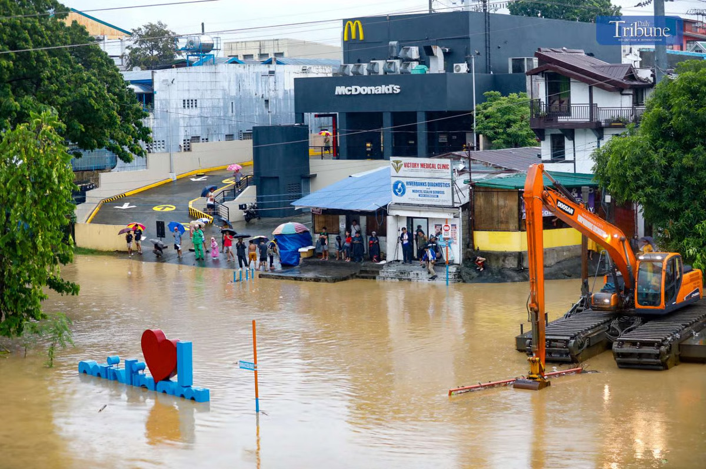
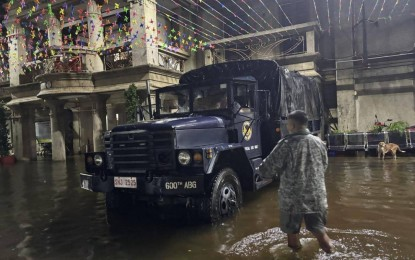
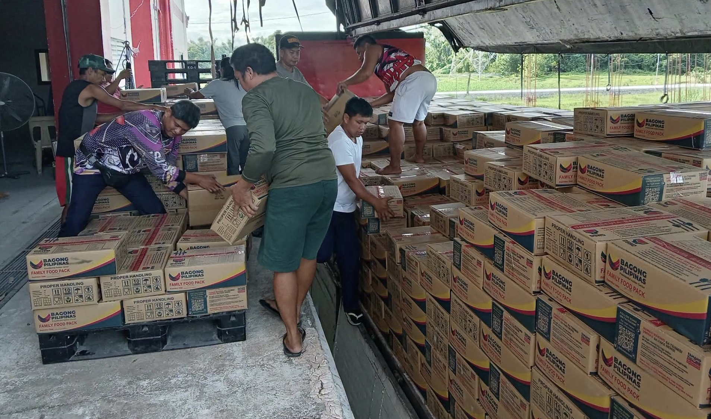
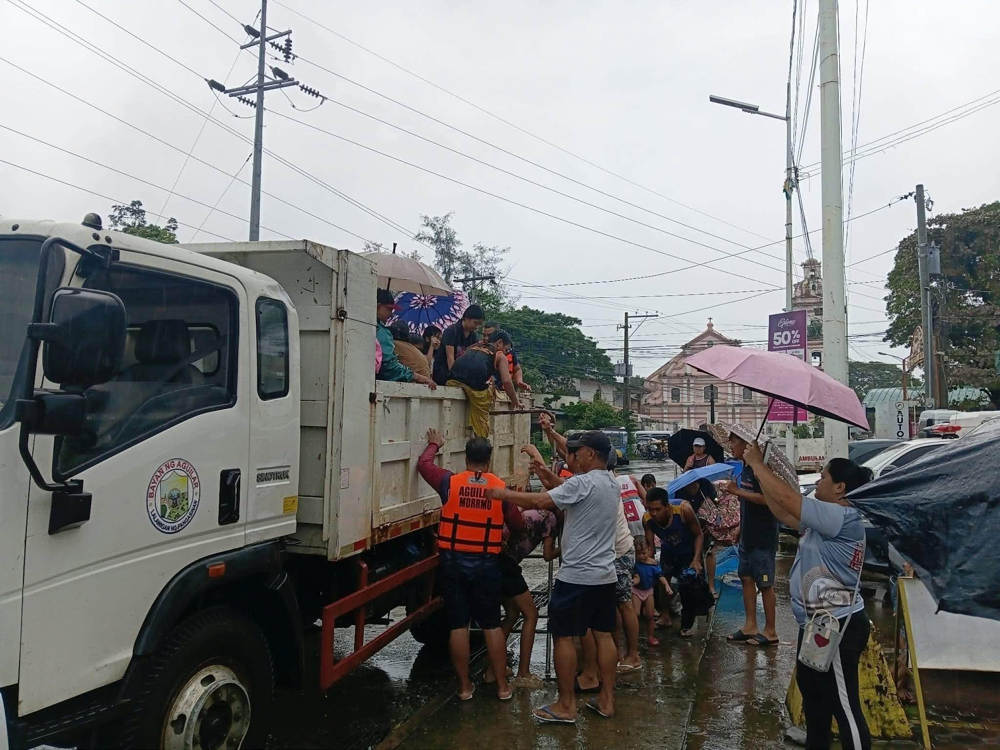

FAMILIES EVACUATE AS THE RIVER RISES
Residents in Marikina and Quezon City evacuated after the Marikina River reached the third alarm level, as continuous Habagat rains increased the risk of flooding in nearby communities.
Read moreNews and Updates about Families affected by the Flood.

Residents in Marikina and Quezon City evacuated after the Marikina River reached the third alarm level, as continuous Habagat rains increased the risk of flooding in nearby communities.
Read more
Rescue teams were deployed to flood-hit communities in Central Luzon and Metro Manila, helping evacuate residents and deliver food and water to families staying in evacuation centers.
Read more
More than 60,000 family food packs were released to flood-affected communities in Central Luzon, while mobile kitchens provided hot meals to families staying in evacuation centers in Lubao and Porac, Pampanga.
Read more
Continuous Habagat rains caused flooding in parts of Pangasinan, Pampanga, Bataan, Bulacan, and Tarlac, with some roads becoming impassable and residents using makeshift rafts to navigate flooded areas.
Read more